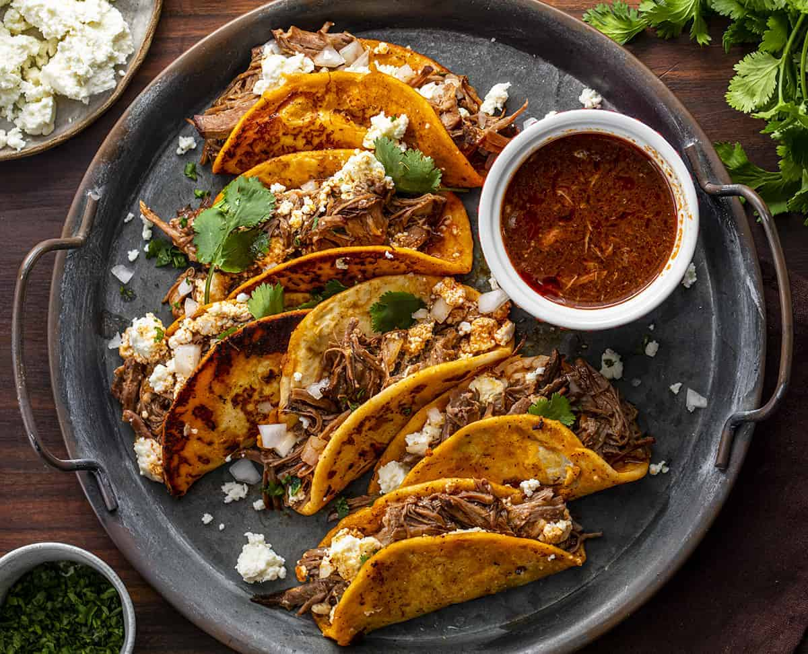

More than just a quick meal, the Beef Taco is a vibrant symbol of Mexican street food culture. While global variations abound, the heart of a great taco lies in the balance of seasoned meat, fresh garnishes, and the perfect tortilla.
Tacos pre-date the arrival of the Spanish in Mexico. Ancient Aztecs and other indigenous groups in the Valley of Mexico were known to eat small fish or insects wrapped in soft, flat corn tortillas. The word "taco" itself is believed to have originated from 18th-century silver miners in Mexico, who used the term to describe the small explosive charges they used to break rock—tiny bundles that packed a massive punch.
The transition to "Beef Tacos" as we know them today followed the introduction of cattle by Europeans. In Northern Mexico, where cattle ranching became a way of life, Carne Asada (grilled beef) became the gold standard. By the mid-20th century, the taco crossed into the United States, leading to the creation of the "Tex-Mex" style—characterized by seasoned ground beef, hard shells, and yellow cheese—which helped the taco become a global phenomenon.
Modern tacos generally fall into two categories: Traditional Mexican (street style) and Tex-Mex . A high-quality beef taco typically features:
Pro Tip: For an authentic experience, always warm your tortillas on a dry skillet or over an open flame until they are pliable and slightly charred. This brings out the toasted nuttiness of the corn and prevents them from breaking under the weight of the fillings.
Begin by finely dicing the white onion and mincing the garlic. In a large skillet over medium heat, add a splash of olive oil. Cook about two-thirds of the onions (saving the rest for garnish) until they become tender and translucent. Stir in the garlic and cook just until fragrant, being careful not to let it brown.
Add the ground beef to the skillet. Increase the heat slightly and use a spatula to break the meat into small, uniform crumbles. Cook until the beef is fully browned and no longer pink. If there is excessive rendered fat in the pan, carefully spoon out the extra, leaving just enough to keep the filling juicy.
Sprinkle the chili powder, ground cumin, smoked paprika, onion powder, and garlic powder directly over the meat. Stir constantly for about a minute; this "blooms" the spices in the beef's natural oils, intensifying their smoky and earthy profiles before any liquid is added.
Stir in the tomato paste and cook for one minute to mellow its acidity. Pour in the beef stock (or water) and season with salt and black pepper. Lower the heat and let the mixture simmer gently for 5–8 minutes. The liquid should reduce into a thick, savory glaze that binds the spices to the beef.
While the beef rests, prepare your corn or flour tortillas. For the best texture, place them directly over a low gas flame for a few seconds per side until they slightly char at the edges, or warm them in a dry, hot pan until they become soft and flexible.
Heap the seasoned beef into the center of your warm tortillas. Scatter the remaining raw white onion, fresh cilantro, and shredded cheese over the top. Serve immediately with fresh lime wedges, as a bright squeeze of juice is essential to balance the rich, spiced meat.